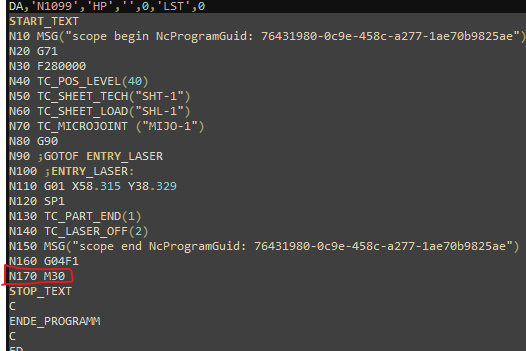

LST 程序结构
LST 中主程序的识别
从 LST 文件中，主程序由以 'HP' 开头并以 M30 结尾的文本组来标识。

LST 中子程序的识别
在 LST 文件中，子程序使用语法 "SP@" 从主程序调用，其中 @ 是子程序的编号，例如：SP1 将调用相应的子程序！

循环程序列表
循环程序在 LST 中预定义，用于在程序中执行特定功能，列表如下：
| 序号 | 名称 | 描述 | DIN 支持 |
|---|---|---|---|
1. |
TC_POS_LEVEL(40) |
使用给定值更新刀头位置 |
是 |
2. |
TC_SHEET_TECH("SHT-1") |
— |
否 |
3. |
TC_SHEET_LOAD("SHT-1") |
— |
否 |
4. |
TC_MICROJOINT("MIJO-1") |
使用给定参数添加软微连接 |
是 |
5. |
TC_LASER_ON(params) |
使用给定技术表开启激光束 |
是 |
6. |
TC_LASERCORR_ON(T_LEFT) |
使用给定值激活刀具半径补偿 G41/G42 |
是 |
7. |
TC_LASER_OFF(param) |
关闭激光束并使用给定参数抬起刀头 |
是 |
8. |
TC_PART_END(param) |
— |
否 |
9. |
TC_LEAD_IN(params) |
在软微连接后使用给定参数添加引入段 |
否 |
10. |
TC_WRITE(params) |
使用给定参数标记文本 |
是 |
11. |
TC_SYNC_POS_SUPPRESS_ON |
停用蛙跳 |
是 |
12. |
TC_SYNC_POS_SUPPRESS_OFF |
激活蛙跳 |
是 |
13. |
TC_SHEET_THICK |
使用残料切割前的上一高度定位刀头 |
是 |
14. |
TC_Wait(param) |
用于拐角冷却防止烧穿的激光循环。激光束被关闭 |
是 |
| 该列表将随新条目、DIN 中的实现等进行更新。 |
特殊命令列表
| 序号 | 名称 | 描述 | DIN 支持 |
|---|---|---|---|
1. |
ROT RPL=90 |
将轮廓旋转 90 度 |
是 |
2. |
ROT |
取消轮廓旋转 |
是 |
3. |
FLIN |
进给速率线性变化 |
否 |
4. |
FNORM |
进给速率正常 |
是 |
5. |
IC |
增量命令 |
是 |